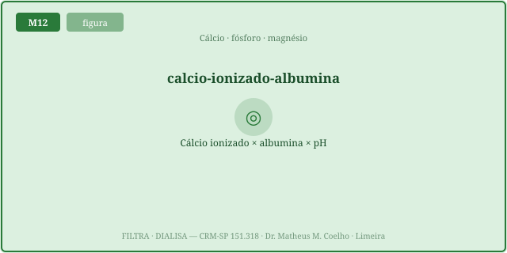
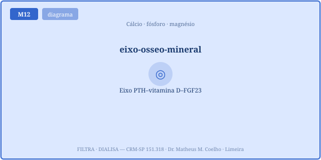
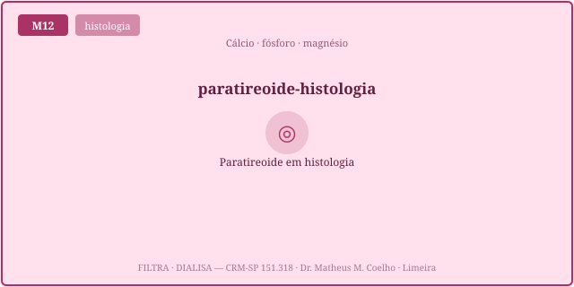
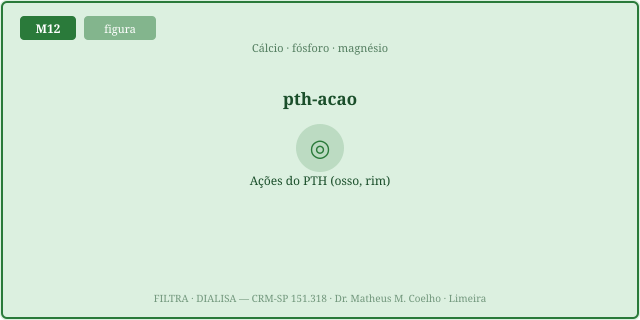
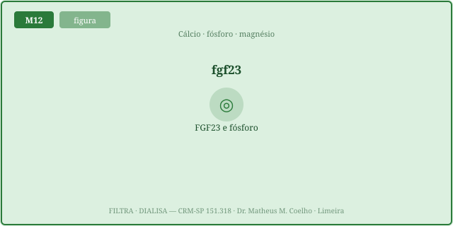
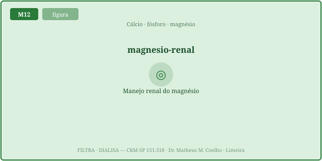
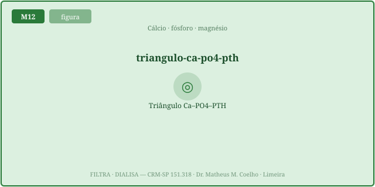

Ca_corr = Ca + 0,8·(4 − alb)) e por pH
(alcalose → ligação↑ → ionizado↓ → tetania; acidose → ionizado↑). A homeostasia mineral é um triângulo
Ca–PO₄–PTH, regido por três hormônios: PTH (Ca↑, PO₄↓, calcitriol↑), calcitriol (absorção
intestinal de Ca e PO₄) e FGF23 (PO₄↓, calcitriol↓). Na DRC o triângulo quebra: PO₄↑ + calcitriol↓ →
hiperPTH secundário. E o magnésio é o cofator secreto: Mg↓↓ paralisa o PTH.Do Ca sérico total, ~40% circula ligado à albumina, ~10% complexado e só ~50% está
ionizado (livre, fisiologicamente ativo). Uma hipoalbuminemia derruba o Ca TOTAL sem mexer no
ionizado — é pseudo-hipocalcemia. Corrige-se com Ca_corr = Ca_total + 0,8·(4 − albumina).
A homeostasia defende o ionizado, não o número total.


O H⁺ compete com o Ca²⁺ pela albumina. Na alcalose (menos H⁺) a albumina prende mais cálcio → ionizado↓ → parestesias, espasmo carpopedal, tetania — mesmo com o Ca TOTAL normal. Na acidose, o H⁺ desloca o Ca da albumina → ionizado↑. Cada 0,1 de ΔpH move o ionizado ~0,2 mg/dL (em sentido inverso). Por isso a hiperventilação dá formigamento perioral.

Sentindo o ionizado cair, a paratireoide libera PTH, que faz três coisas: (a) ↑ reabsorção renal de Ca no TCD → Ca↑; (b) inibe o NaPi no TCP → fosfatúria → PO₄↓; (c) ativa a 1α-hidroxilase renal → calcitriol↑. Sobe o Ca, baixa o PO₄, e recruta a vitamina D. É a alavanca central do triângulo.

O FGF23, secretado pelo osteócito, é o guardião do fosfato: aumenta a excreção renal de PO₄ (fosfatúrico) e inibe o calcitriol. Na DRC ele sobe cedo — antes do PO₄ e do PTH — tentando segurar o fósforo, mas ao custo de derrubar a vitamina D ativa.


Ca, PO₄ e PTH formam um triângulo de feedback: Ca↓ → PTH↑ → Ca↑ (e PO₄↓). Na DRC o triângulo se rompe: TFG↓ → o rim não excreta PO₄ (PO₄ retido↑) e não ativa a vit D (calcitriol↓); FGF23 sobe. PO₄↑ + calcitriol↓ + Ca↓ → estímulo triplo ao PTH → PTH↑↑ (hiperPTH 2º) → doença óssea (osteíte fibrosa). As Fig. 1–8 reaparecem no Caso, na Trilha e na Avaliação.

Quatro pacientes, quatro "cálcios". (A) Cirrótica, albumina 2,0, Ca total 7,4 — "baixo". (B) Ansiosa hiperventilando, Ca total 9,4, pH 7,62, formigamento e espasmo. (C) DRC G5, Ca 8,2 · PO₄ 6,8 · PTH 600. (D) Câncer de pulmão, Ca total 13,0. E um adendo: (E) hipocalcemia que não corrige com cálcio IV.
Ca_corr = 7,4 + 0,8·(4 − 2,0)
= 9,0 mg/dL — normal. O ionizado está normal: é pseudo-hipocalcemia da hipoalbuminemia
(Fig. 1). No engine: caTotal 7,4 · alb 2,0 → caCorr ~9,0, regime pseudo_hipocalcemia.
Infundir cálcio aqui é tratar um número, não o paciente. Confirme com Ca ionizado direto.caTotal 9,4 · pH 7,62 → caIon < 4,3, regime tetania_alcalose. Trate a
hiperventilação, não jogue cálcio — quando o pH normaliza, o ionizado volta.gfr 12 · po4 6,8 · caTotal 8,2 → PTH ↑↑,
calcitriol baixo, regime hiperpth_secundario. A conduta ataca o triângulo: quelar PO₄, repor vit D
ativa, controlar o PTH.caTotal 13 · pthExtra 1,6 → estado
hipercalcemia, PTH endógeno suprimido, regime hipercalcemia_pthrp. PTH alto + Ca alto seria
hiperPTH primário — outra história.caTotal 7,4 · mg 0,8 → mgGate fechado, PTH < normal, regime
hipocalcemia_mg.
Pista: a livre.
Só o ionizado (~50% do total) é ativo. O resto está ligado à albumina (~40%) ou complexado (~10%).
O CaSR da paratireoide lê o ionizado, não o total.
Pista: o carregador.
Menos albumina → menos cálcio LIGADO → o Ca TOTAL medido cai, mas o ionizado fica. Corrige-se:
Ca_corr = Ca + 0,8·(4 − alb). É pseudo-hipocalcemia.
Pista: H⁺ compete com Ca²⁺.
Menos H⁺ (alcalose) → a albumina prende mais Ca²⁺ → ionizado↓ → tetania, mesmo com total
normal. A acidose faz o inverso (ionizado↑).
Pista: rim, rim e vitamina.
↑ reabsorção renal de Ca (TCD) → Ca↑; ↓ reabsorção de PO₄ (inibe NaPi no TCP) → fosfatúria → PO₄↓;
↑ 1α-hidroxilase → calcitriol↑. Sobe o Ca, joga fora o fósforo.
Pista: intestino e rim.
O calcitriol (vit D ativa) ↑ a absorção intestinal de Ca e PO₄. É ativado no rim
(1α-hidroxilase, estimulada por PTH, inibida por FGF23). Rim lesado = pouca vit D ativa.
Pista: o osso fala.
Do osteócito (osso): é fosfatúrico (PO₄↓) e inibe o calcitriol. Sobe cedo na DRC,
antes do PO₄ e do PTH — o primeiro sinal do desarranjo mineral.
Pista: estímulo triplo.
TFG↓ → PO₄ retido↑ e calcitriol↓ (e Ca tende a cair). PO₄↑ + calcitriol↓ + Ca↓ → estímulo triplo ao
PTH → PTH↑↑. É secundário (a glândula responde a um problema fora dela).
Pista: cofator do PTH.
O Mg é cofator da secreção e da ação do PTH. Mg↓↓ paralisa a paratireoide → PTH inadequadamente
baixo apesar do Ca baixo → hipocalcemia refratária. Só corrige repondo Mg.
Pista: o ensaio não vê o PTHrP.
Geralmente baixo/suprimido: o PTHrP age como PTH mas não é medido pelo ensaio. O Ca alto suprime
a paratireoide. PTH alto + Ca alto seria hiperPTH primário.
Pista: precipitação.
Ca e PO₄ ambos altos elevam o produto Ca×PO₄ → risco de calcificação metastática (vasos,
tecidos). Na DRC controla-se o PO₄ (quelantes) antes de empurrar Ca/vit D, justamente para não disparar
o produto.
A curva ciano é o Ca ionizado em pH 7,40 conforme a albumina varia (mantido o Ca corrigido constante): quase plana — corrigir resolve o viés da albumina. A curva laranja é o mesmo em alcalose (pH 7,55): a curva inteira desce abaixo do limiar de tetania. O ponto branco é o seu paciente. Mexa o pH e veja a curva subir/descer — o ionizado obedece ao pH, não ao número total.
| Variável | Atual | Normal ≈ |
|---|---|---|
| Ca corrigido (mg/dL) | — | 8.5–10.2 |
| Ca IONIZADO (mg/dL) | — | 4.5–5.3 |
| PTH (pg/mL) | — | 15–65 |
| Calcitriol — vit D ativa (pg/mL) | — | 20–60 |
| FGF23 (RU/mL) | — | ~50 |
| Fosfato sérico (mg/dL) | — | 2.5–4.5 |
| Fosfatúria (excesso relativo) | — | ~0 |
| Produto Ca×PO₄ | — | < 55 |
| Gate do Mg sobre o PTH (0–1) | — | 1.0 |
| Estado do cálcio | — | normal |
| Regime | — | normal |
Ca + 0,8·(4 − alb)
é a clássica, mas a literatura mostra variação individual; o Ca ionizado medido direto é o padrão.